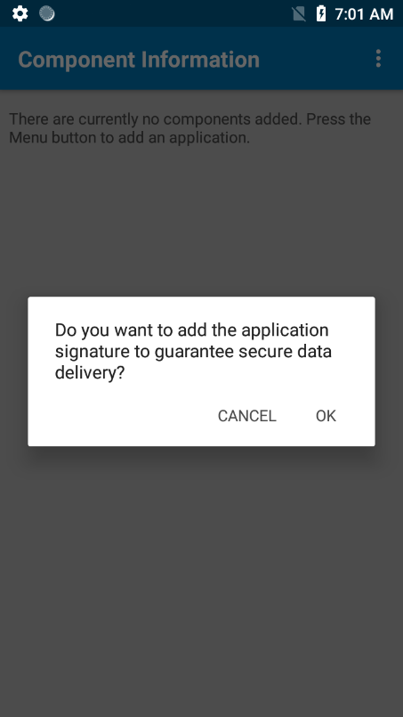

概要
インテント出力を使用すると、DataWedge で取得および処理されたデータを、関連付けられたフォアグラウンド アプリケーションに Android インテント オブジェクト内のペイロードとして送信できます。これにより、取得したデータをプログラムでアプリケーションに渡して、そこで使用したり、さらに処理したりすることができます。DataWedge API を介して DataWedge の多くの機能をアクティブにできるのと同様、アプリケーションのコア コンポーネント (アクティビティ、サービス、およびブロードキャスト レシーバ) もインテントによってアクティブにすることができます。
インテント オブジェクト
インテント オブジェクトは、目的のアクションを記述する情報のバンドルです。これには、処理対象のデータ、アクションを実行する必要のあるコンポーネントのカテゴリ、およびその他の関連するデータや指示が含まれます。インテントが開始されると、Android でインテントに応答する適切なコンポーネントが検出され、必要に応じてコンポーネントの新しいインスタンスが起動されて、それにインテント オブジェクトが渡されます。
コンポーネントでは、インテント フィルタを通じてそうした機能 (応答できるインテントの種類) をアドバタイズします。コンポーネントを起動する前にコンポーネントで処理できるインテントをシステムが学習する必要があるため、アプリの AndroidManifest.xml ファイルで <intent-filter> 要素としてインテント フィルタを指定します。コンポーネントには、それぞれが異なる機能を記述する任意の数のインテント フィルタを含めることができます。
たとえば、マニフェストに以下の行が含まれているとします。
<intent-filter>
...
<action android:name="android.intent.action.DEFAULT" />
<category android:name="android.intent.category.MAIN" />
</intent-filter>
この場合、インテント出力構成のインテント アクションは、次のようになります。
android.intent.action.DEFAULT
また、インテント カテゴリは、次のようになります。
android.intent.category.MAIN
未加工データの出力
DataWedge では、取得したデータを、通常のプレーンテキスト モードと 16 進モードに加えて、エンコーダを適用する前の未加工形式で出力できます。これは、Zebra でサポートされていない文字セットを取得するためにカスタム エンコーダが必要な場合に便利です。
未加工データは、com.symbol.datawedge.decode_data インテント エクストラを使用してバイト ストリームとして受信されます。以下の「シングル デコード モード」セクションを参照してください。
未加工データをキーストロークとして出力することはできません。
インテント出力のセットアップ
DataWedge では、AndroidManifest.xml ファイルの記述に従って、[インテント カテゴリ] の [インテント アクション] を通じてインテントを呼び出します。
この 2 つの値は、組み合わせると、同じ組み合わせを使用するインテントのアプリでリッスンできる「チャンネル」のようになり、異なる値ペアを使用する他のインテントからの「ノイズ」が除外されます。これらの値がわかったら、DataWedge Intent 出力を一致するように設定する必要があります。
[コンポーネント情報] には、インテント データを受信するように指定されたアプリケーションのパッケージ名と署名を指定します。これにより、セキュリティのレベルが上がり、データが目的のアプリケーションにのみ配信されることが保証されます。DataWedge コンテンツ プロバイダーを使用している場合は、指定したパッケージ名だけがコンテンツ プロバイダーにクエリを実行できます。
パッケージ名を指定した場合は、そのパッケージ名にのみ明示的なインテントが送信されます。また、アプリケーションの署名チェックを有効にすると、インテント配信のセキュリティのレベルがさらに上がります。インテントを送信する前に、アプリケーションの署名が照合されます。署名が一致しない場合、そのインテントは送信されません。署名チェックが有効になっていない場合は、パッケージ名に基づいて明示的なインテントが送信されます。
たとえば、署名チェックなしでパッケージ名が「com.zebra.app1」として指定されている場合は、これと同じパッケージ名で別のアプリを作成し、元のアプリであると偽装できます。これにより、デバイス上の元のアプリをアンインストールして、代わりに悪意のあるアプリをインストールできるようになります。この結果、インテント データが悪意のあるアプリに配信されます。それに対して、元のアプリの署名チェックが有効になっていた場合は、新しいアプリが同じパッケージ名であっても、署名が異なるため、インテント データを悪意のあるアプリに配信することはできません。
[コンテンツ プロバイダの使用] オプションを使用すると、アプリケーションで DataWedge のコンテンツ プロバイダを利用して、画像 (主に署名読み取りや NextGen SimulScan でスキャンした画像) などの 500KB を超えるファイルからスキャンしたデータを取得できます。コンテンツ プロバイダは、アプリ間で共有できるようにデータをカプセル化する Android アプリ コンポーネントです。
これらの機能のパラメータは、UI または 構成の設定 API を使用して構成できます。
詳細については、「コンテンツ プロバイダの使用」プログラマ ガイドを参照してください。
重要: アクティビティに直接出力するスキャン アプリケーションの場合は、アプリの
AndroidManifest.xmlファイルでアクティビティを「singleTop」として指定する必要があります。この方法でアクティビティを指定しないと、デコードのたびにアクティビティのインスタンスが起動され、取得したデータが、新たに生成された各インスタンスに送信されます。
インテント出力オプションで DataWedge を構成するには:
1.構成するプロファイルの [インテント出力] セクションに移動します。
2.[有効] ボックスをオンにして、[インテント出力] をアクティブにします。
 「起動プログラム」プロファイルの [インテント出力] オプション
「起動プログラム」プロファイルの [インテント出力] オプション
3.以下の説明に従って、アクション、カテゴリ、および配信を指定します。
インテント アクション - インテントを処理するアクションを指定します
インテント カテゴリ - 処理するインテントのカテゴリを指定します
インテント配信 - インテントベースのデータに対して次の 4 つの配信方法のいずれかを選択するのに使用します
- startActivity で送信 - データを配信するために startActivity() Android API が呼び出されます。
- startService 経由で送信 - Android の startService() API を使用してデータを送信します。この方法は、アプリケーション/サービスが Android SDK バージョン 25 以下向けにコンパイルされている場合にのみ推奨されます。アプリケーション/サービスが SDK バージョン 26 以降向けにコンパイルされている場合、startService() のオプションは動作しません。詳しくは、startService Android 開発者向け記事を参照してください。
- startForegroundService で送信 - データを配信するために startForegroundService() Android API が呼び出されます。このオプションは、Android Oreo (v8.0) 以降に適用されます。この方法は、アプリケーション/サービスが Android SDK バージョン 30 以下向けにコンパイルされている場合にのみ推奨されます。アプリケーション/サービスが SDK バージョン 31 以降向けにコンパイルされている場合、startForegroundService() オプションは動作しません。詳しくは、startService Android 開発者向け記事を参照してください。
- ブロードキャスト インテント - "レシーバ フォアグラウンド フラグ"
Intent.FLAG_RECEIVER_FOREGROUNDを設定して、ブロードキャスト受信側に、より短いタイムアウト間隔でフォアグラウンドを優先して実行する許可を与えることができます。このフラグは、デバイスのブートアップ直後にインテントの配信で遅延が発生した場合にのみ使用することをお勧めします。
4.セキュア インテント配信するコンポーネント情報を指定します。[コンポーネント情報] をタップします。  [インテント出力] の [コンポーネント情報]
[インテント出力] の [コンポーネント情報]
右上のメニューをタップして、[新規コンポーネント] を選択します。  新規コンポーネントの追加
新規コンポーネントの追加
インストールされているアプリ リストからインテント データを受信するパッケージ名を選択します。 新規コンポーネントの選択
新規コンポーネントの選択
プロンプトが表示されたら、[OK] をタップしてアプリケーションの署名チェックを有効にし、DataWedge で .APK を介してアプリの署名を取得して比較に使用できるようにします。それ以外の場合は、[キャンセル] をタップします。アプリで複数の署名を使用できる場合は、ユーザーが 1 つの署名を選択するためのリストが表示されます。  アプリケーションの署名
選択したパッケージ名が表示され、署名チェックが有効/無効になっていることが示されます。 コンポーネント情報リスト
コンポーネント情報リスト
5.画像などの大きなデータをスキャンする場合 (署名読み取りや NextGen SimulScan を使用する場合など) は、[インテント出力] 画面で [コンテンツ プロバイダの使用] を有効にします。 コンテンツ プロバイダの使用
コンテンツ プロバイダの使用
シングル デコード モード
シングル モードは、一度に 1 つのバーコードを読み取ってデコードする、最も一般的なデコード モードです。UDI 準拠のオブジェクトなどで複数のバーコードを同時にデコードする場合は、「UDI/複数デコード モード」を参照してください。
パラメータ
名前: "com.symbol.datawedge.source"
タイプ: [String]
内容: 着信データのソース
指定可能な値:
- "msr"
- "scanner"
- "simulscan"
- "serial"
- "voice"
- "rfid"
注: 着信データのソースは、カメラ、イメージャ、またはスキャナの場合は「scanner」です。
名前: "com.symbol.datawedge.label_type"
タイプ: [String]
内容: バーコード ラベル タイプ (「EAN128」など)
指定可能な値:
- "LABEL-TYPE-CODE39"
- "LABEL-TYPE-CODABAR"
- "LABEL-TYPE-CODE128"
- "LABEL-TYPE-D2OF5"
- "LABEL-TYPE-IATA2OF5"
- "LABEL-TYPE-I2OF5"
- "LABEL-TYPE-CODE93"
- "LABEL-TYPE-UPCA"
- "LABEL-TYPE-UPCE0"
- "LABEL-TYPE-UPCE1"
- "LABEL-TYPE-EAN8"
- "LABEL-TYPE-EAN13"
- "LABEL-TYPE-MSI"
- "LABEL-TYPE-EAN128"
- "LABEL-TYPE-TRIOPTIC39"
- "LABEL-TYPE-BOOKLAND"
- "LABEL-TYPE-COUPON"
- "LABEL-TYPE-DATABAR-COUPON"
- "LABEL-TYPE-ISBT128"
- "LABEL-TYPE-CODE32"
- "LABEL-TYPE-PDF417"
- "LABEL-TYPE-MICROPDF"
- "LABEL-TYPE-TLC39"
- "LABEL-TYPE-CODE11"
- "LABEL-TYPE-MAXICODE"
- "LABEL-TYPE-DATAMATRIX"
- "LABEL-TYPE-QRCODE"
- "LABEL-TYPE-GS1-DATABAR"
- "LABEL-TYPE-GS1-DATABAR-LIM"
- "LABEL-TYPE-GS1-DATABAR-EXP"
- "LABEL-TYPE-USPOSTNET"
- "LABEL-TYPE-USPLANET"
- "LABEL-TYPE-UKPOSTAL"
- "LABEL-TYPE-JAPPOSTAL"
- "LABEL-TYPE-AUSPOSTAL"
- "LABEL-TYPE-DUTCHPOSTAL"
- "LABEL-TYPE-FINNISHPOSTAL-4S"
- "LABEL-TYPE-CANPOSTAL"
- "LABEL-TYPE-CHINESE-2OF5"
- "LABEL-TYPE-AZTEC"
- "LABEL-TYPE-MICROQR"
- "LABEL-TYPE-US4STATE"
- "LABEL-TYPE-US4STATE-FICS"
- "LABEL-TYPE-COMPOSITE-AB"
- "LABEL-TYPE-COMPOSITE-C"
- "LABEL-TYPE-WEBCODE"
- "LABEL-TYPE-SIGNATURE"
- "LABEL-TYPE-KOREAN-3OF5"
- "LABEL-TYPE-MATRIX-2OF5"
- "LABEL-TYPE-OCR"
- "LABEL-TYPE-HANXIN"
- "LABEL-TYPE-MAILMARK"
- "MULTICODE-DATA-FORMAT"
- "LABEL-TYPE-GS1-DATAMATRIX"
- "LABEL-TYPE-GS1-QRCODE"
- "LABEL-TYPE-DOTCODE"
- "LABEL-TYPE-GRIDMATRIX"
- "LABEL-TYPE-UNDEFINED"
名前: "com.symbol.datawedge.data_string"
タイプ: [String]
内容: 取得したバーコード文字
例: "abcde12345"
名前: "com.symbol.datawedge.decode_data"
タイプ: [List <byte [ ]>]
内容: バイト配列の配列リストとして取得した未加工 (未変更) データ
例: List_Item_1(array_1(byte11,byte12,byte13)),List_Item_2(array_2(byte21,byte22,byte23)) ...
サンプル コード:
ArrayList<byte[]> rawData =
(ArrayList <byte[]>) initiatingIntent.getSerializableExtra("com.symbol.datawedge.decode_data");
if (rawData != null)
{
byte[] rawBytes = rawData.get(0);
for (int i = 0; i < rawBytes.length; i++)
Log.d(LOG_TAG, i + ": " + rawBytes[i]);
}
名前: "com.symbol.datawedge.decoded_mode"
タイプ: [String]
内容: 着信データをデコードするのに使用するモード
指定可能な値:
- "multiple_decode"
- "single_decode"
UDI/複数デコード モード
UDI 準拠のオブジェクトをデコードする場合、データは複数のバーコードから同時に取得され、マルチデコード バンドル (シングルデコード バンドルとは異なる) として出力されます。DataWedge では、1 回のスキャンで複数の非 UDI バーコードを取得することもできます。このセクションは、両方のモードに該当します。
パラメータ
名前: "com.symbol.datawedge.decode_mode"
タイプ: [String]
内容: 着信データをデコードするのに使用するモード
指定可能な値:
- "multiple_decode"
- "single_decode"
名前: "com.symbol.datawedge.smart_decode_type"
タイプ: [String]
内容: デコード タイプ
指定可能な値:
- “udi”
- “multibarcode”
名前: "com.symbol.datawedge.data_string"
タイプ: [String]
内容: 取得したバーコード文字
例: "abcde12345"
名前: "com.symbol.datawedge.decode_data"
タイプ: [List <byte [ ]>]
内容: バイト配列の配列リストとして取得した未加工 (未変更) データ
例: List_Item_1(array_1(byte11,byte12,byte13)), List_Item_2(array_2(byte21,byte22,byte23)) ...
名前: "com.symbol.datawedge.source"
タイプ: [String]
内容: 着信データのソース
指定可能な値:
- "msr"
- "scanner"
- "simulscan"
名前: "com.symbol.datawedge.label_id"
タイプ: [String]
内容: 着信データの UDI タイプ
指定可能な値:
- “UDI_HIBCC”
- “UDI_GS1”
- “UDI_ICCBBA”
- “UNDEFINED”
名前: "com.symbol.datawedge.barcodes"
タイプ: [List <Bundle>]
内容: バンドルの説明を参照 (下記)
名前: "com.symbol.datawedge.tokenized_data"
タイプ: [List <Bundle>]
内容: バンドルの説明を参照 (下記)
注: 着信データのソースは、カメラ、イメージャ、またはスキャナの場合は "scanner" です
バーコード バンドル
バンドル名: "com.symbol.datawedge.barcodes"
パラメータ
名前: "com.symbol.datawedge.label_type"
タイプ: [String]
内容: バーコード ラベル タイプ、元のシンボル体系 (「EAN128」など)
名前: "com.symbol.datawedge.decode_data"
タイプ: [byte [ ] ]
内容: バイト配列として取得した未加工 (未変更) データ
名前: "com.symbol.datawedge.data_string"
タイプ: [String]
内容: 取得したバーコード文字
例: "abcde12345"
トークン化されたデータ バンドル
バンドル名: "com.symbol.datawedge.tokenized_data"
パラメータ
名前: "token_id"
タイプ: [String]
内容: UDI 定義タグ内のデータ
指定可能な値: (この後の「トークン ID」を参照)
名前: "token_data_type"
タイプ: [String]
内容: 着信データ タイプ
例: date、long、string
名前: "token_format"
タイプ: [String]
内容: 着信文字列の形式
例: YYYYMMDD
名前: "token_string_data"
タイプ: [String]
内容: 取得したバーコード文字
例: "abcde12345"
名前: "token_binary_data"
タイプ: [byte [ ] ]
内容: バイト配列として取得したバーコード データ
トークン ID
トークン ID: di
表示名: デバイス ID
トークン ID: manufacturing_date_original
表示名: 製造日
トークン ID: expiration_date_original
表示名: 有効期限日
トークン ID: lot_number
表示名: ロット番号
トークン ID: serial_number
表示名: シリアル番号
トークン ID: mpho_lot_number
表示名: ヒト由来の医療製品 (MPHO) のロット番号
トークン ID: donation_id
表示名: ドネーション ID 番号
トークン ID: labeler_identification_code
表示名: ラベラー ID コード
トークン ID: product_or_catalog_number
表示名: 製品/カタログ番号
トークン ID: unit_of_measure_id
表示名: 測定単位 ID
トークン ID: 数量
表示名: 数量
その他のデコード タグ
インテント バンドルに追加されたデコード関連データは、特定の文字列タグを使用して取得できます。以下のコードを、以降のセクションの文字列タグとともに使用します。
Intent.getStringExtra()
タグ: LABEL_TYPE_TAG
タイプ: [String]
名前: "com.symbol.datawedge.label_type"
内容: バーコード ラベル タイプ
例: "LABEL-TYPE-EAN128"
タグ: DATA_STRING_TAG
タイプ: [String]
名前: "com.symbol.datawedge.data_string"
内容: 取得したバーコード文字
例: "abcde12345"
注: 複数のバーコードを同時に取得すると、デコードされたデータが連結され、1 つの文字列として送信されます。
タグ: DECODE_DATA_TAG
タイプ: [byte [ ] ]
名前: "com.symbol.datawedge.decode_data"
内容: バイト配列の配列リストとして返されたデコード データ。
注: ほとんどの場合、デコードごとに 1 つのバイト配列があります。
その他の DataWedge 出力オプション:
- キーストローク - 取得したデータを、キーボードが押されたかのように出力します
- インターネット プロトコル - TCP または UDP を使用してネットワーク経由でデータを出力します
関連ガイド: